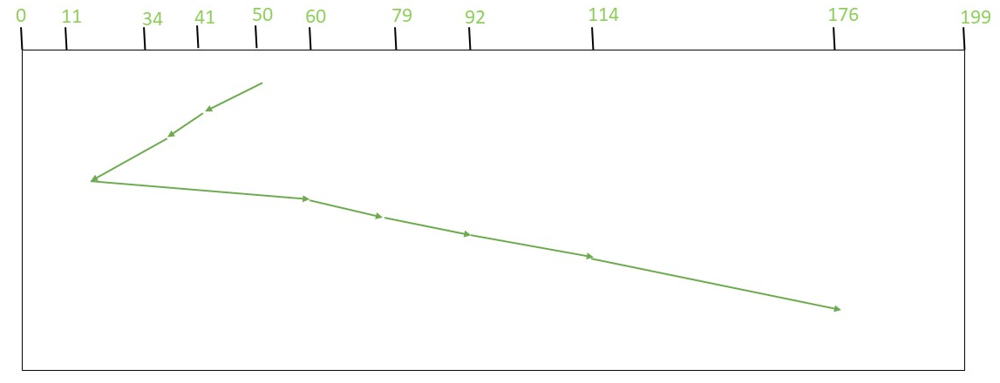

It selects the request which is closest to the current head position before moving the head away to service other requests. This is done by selecting the request which has the least seek time from the current head position.
Advantages of Shortest Seek Time First
- Better performance than FCFS scheduling algorithm.
- It provides better throughput.
- This algorithm is used in Batch Processing system where throughput is more important.
- It has less average response and waiting time.
Disadvantages of Shortest Seek Time
- Let Request array represents an array storing indexes of tracks that have been requested. ‘head’ is the position of disk head.
- Find the positive distance of all tracks in the request array from head.
- Find a track from requested array which has not been accessed/serviced yet and has minimum distance from head.
- Increment the total seek count with this distance.
- Currently serviced track position now becomes the new head position.
- Go to step 2 until all tracks in request array have not been serviced.
Examples:
Input:
Request sequence = {176, 79, 34, 60, 92, 11, 41, 114}
Initial head position = 50
Output:
Total number of seek operations = 204
Seek Sequence is
41
34
11
60
79
92
114
176
The following chart shows the sequence in which requested tracks are serviced using SSTF.
Therefore, total seek count is calculated as:
= (50-41)+(41-34)+(34-11)+(60-11)+(79-60)+(92-79)+(114-92)+(176-114)
= 204